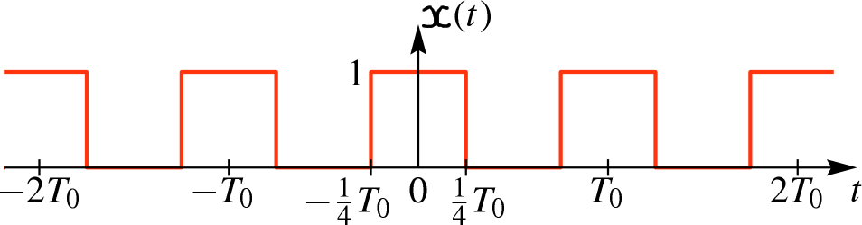
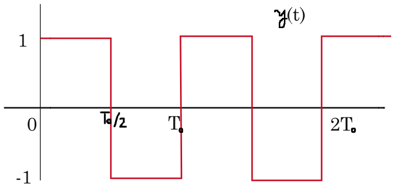
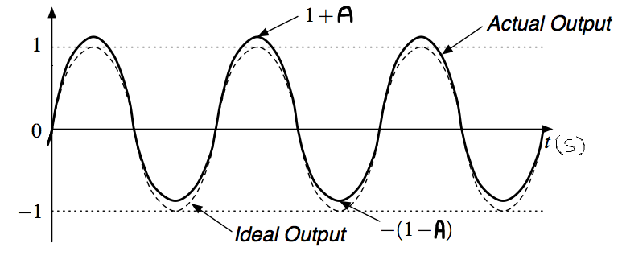

\( \def\df{\triangleq} \def\E{\mathrm{e}} \def\J{\mathrm{j}} \def\upi{π} \def\Exp{{\rm E}\,} \DeclareMathOperator{\Pr}{Pr} \DeclareMathOperator{\Realpart}{Re} \def\td{\text{d}} \def\dif{{\rm d}} \)

We know the Fourier series representation of the periodic square wave $x(t)$. Find the Fourier series representation of

High-power amplifiers often use a different set of transistors for positive- and negative-polarity outputs. If these are not balanced exactly, the result is distortion in the amplifier output. If we apply a sinusoid to the input of such an amplifier, the result is an output that looks like

where $0 < A < 1$. The ideal waveform (in dashed line) is a sine with amplitude $1$. The actual output $x(t)$ (in full line) has positive and negative lobes with amplitudes $1+A$ and $1-A$, respectively: the maximum value at the positive lobes is $1+A$ and the minimum value at the negative lobes is $-(1-A)$. Assume that the ideal waveform is \[ x_{\text{i}}(t) = \sin( \upi t). \] Note that the output $x(t)$ is not just a sinusoid plus a DC component.
(a) What are the fundamental frequency $\omega_0$ and period $T_0$ of $x(t)$?
(b) Think of the actual output signal $x(t)$ as the ideal output signal \(x_{\text{i}}(t)=\sin( \pi \, t)\) plus an error signal $e(t)$: \[ x(t) = x_{\text{i}}(t) + e(t). \] Sketch the error signal $e(t)$ as a function of time $t$. Label your plot carefully.
(c) What are the fundamental period and frequency of $e(t)$?
(d) Find the Fourier-series representation of \(x_{\text{i}}(t)=\sin( \upi t)\). What are the fundamental frequency and period of \(x_{\text{i}}(t)\)?
(e) We wish to compute the Fourier-series representation of the actual output $x(t)$. For which Fourier coefficients $a_k$ of $x(t)$ can you state with certainty that they are zero?